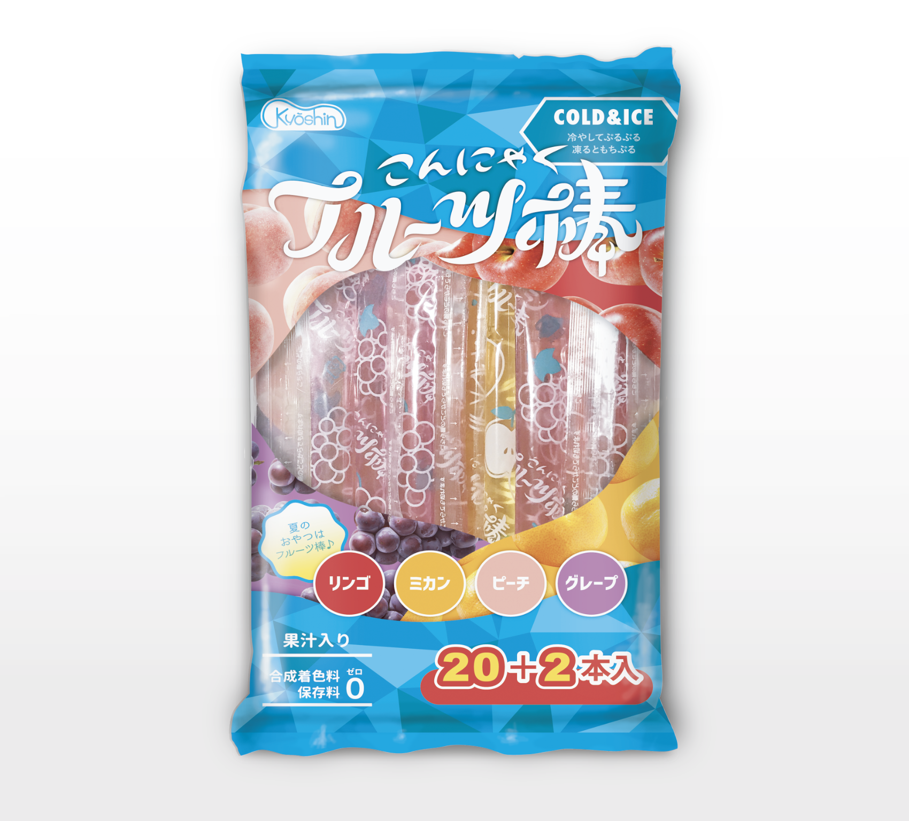
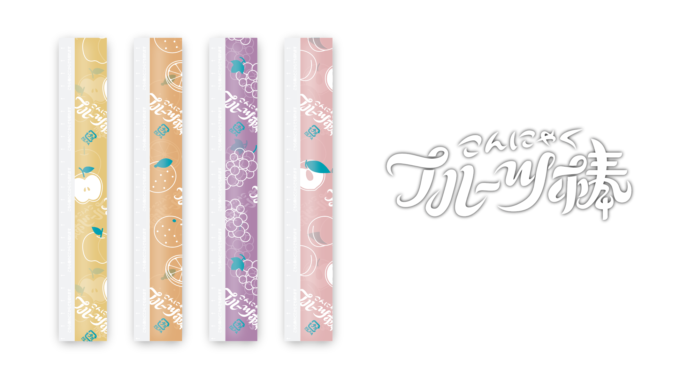

こんにゃくフルーツ棒
共親製菓株式会社
パッケージ
2016. 12


パッケージ
2016. 12
スーパーに買いものに来るお母さん世代の大人の女性に、ちょっと可愛いな、と思ってもらえるような雰囲気にしたいとのご依頼で制作。
凍らせて食べても美味しいこんにゃくゼリー。上下の幾何図形のパターンは涼やかなイメージで配置。またそれらの直線的な様相と対比させるように、緩やかな曲線を使って商品ロゴや窓のフォルムなどを描画しました。
＜ BACK
© Moeri Ito